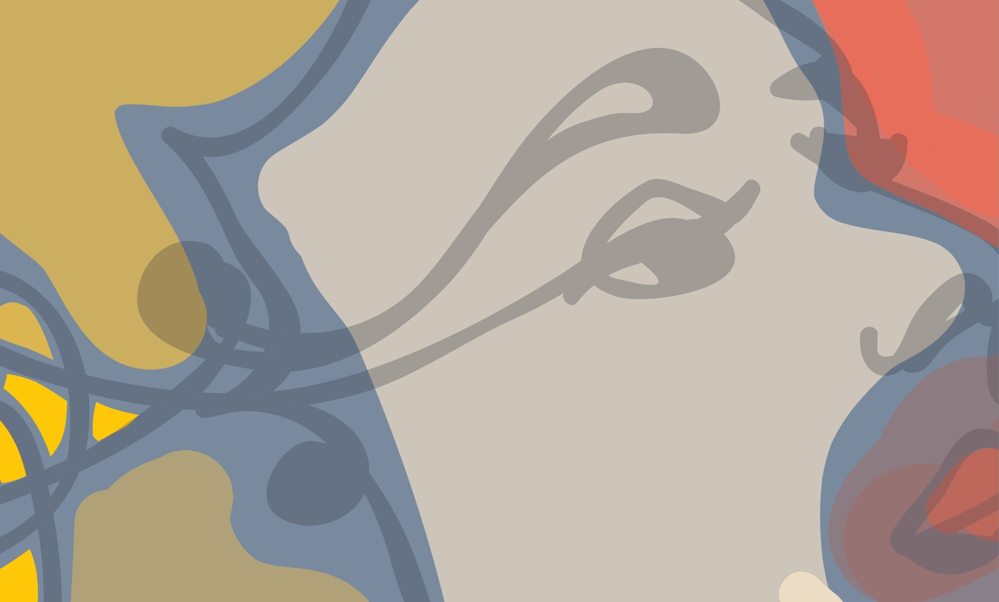
Ítölsk áfengislaus gæðavín — vínandinn fjarlægður undir lofttæmi án þess að bragðið tapist. Ekta vín, ekkert áfengi.Italian dealcoholized fine wines — the alcohol lifted out under vacuum without losing the flavour. Real wine, no alcohol.
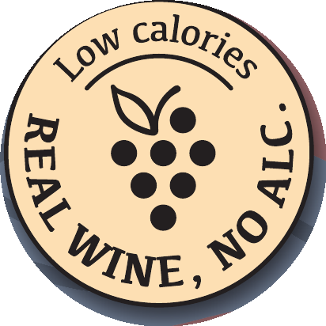
Áfengislaust vín — fullkomin lausn fyrir öll sem vilja skála án áfengis og njóta glass af víni eða freyðivíni, án þess að slá af bragði og upplifun.Dealcoholized wine — the ideal solution for anyone who wants to toast alcohol-free and enjoy a glass of wine or sparkling wine, without compromising on taste and experience.
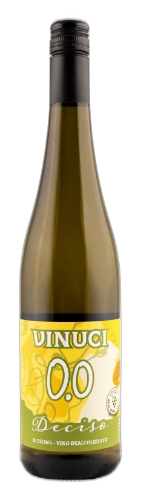
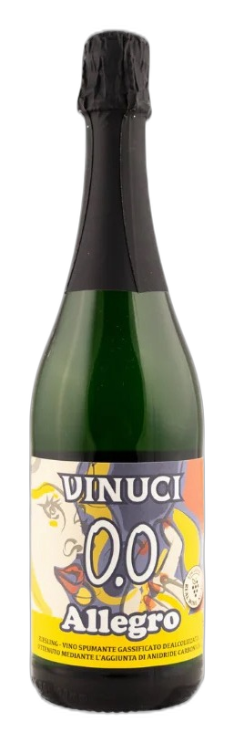
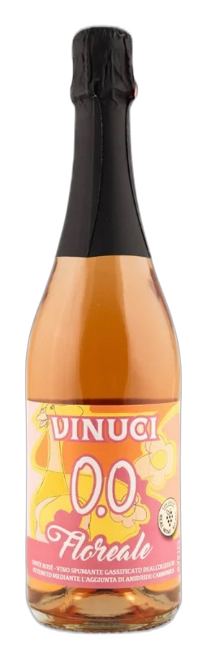
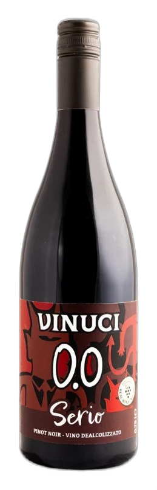
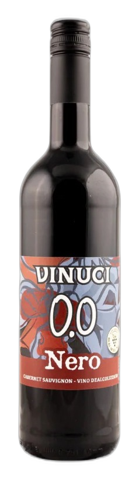
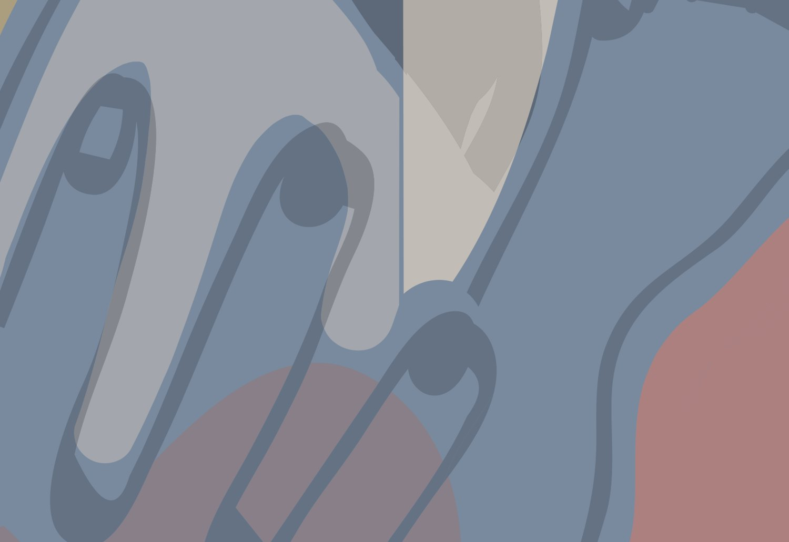
Með Vinuci getur staðurinn boðið vandað vín þeim sem drekka ekki áfengi — án þess að grípa í gos eða vatn. Fullkomið með pörun, í hádeginu, fyrir akandi gesti og öll sem einfaldlega kjósa það.With Vinuci your venue can offer a proper wine to guests who don't drink alcohol — no reaching for soda or water. Perfect for pairings, lunch service, drivers, and anyone who simply prefers it.
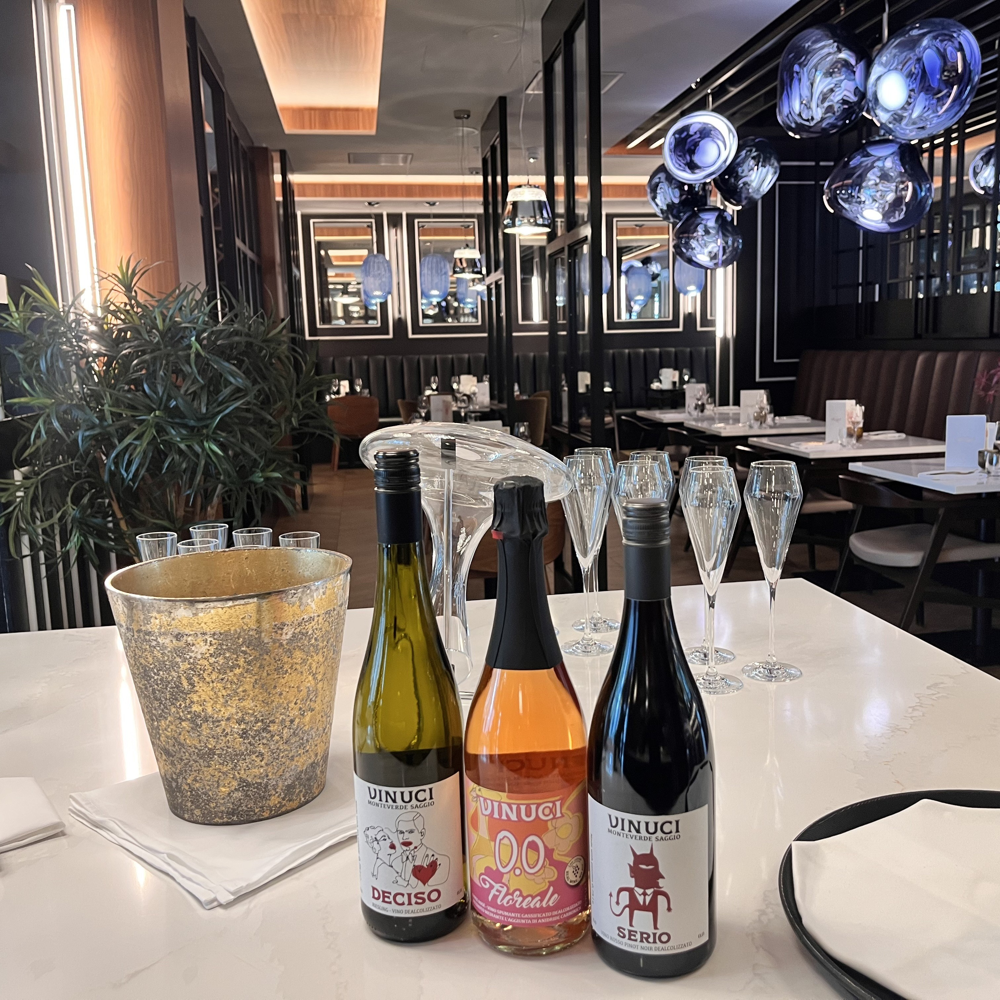
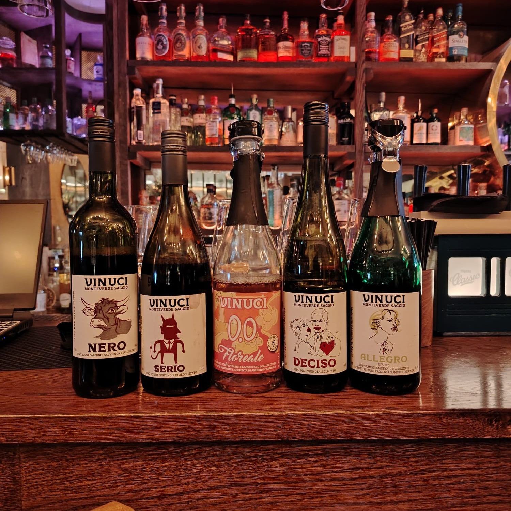
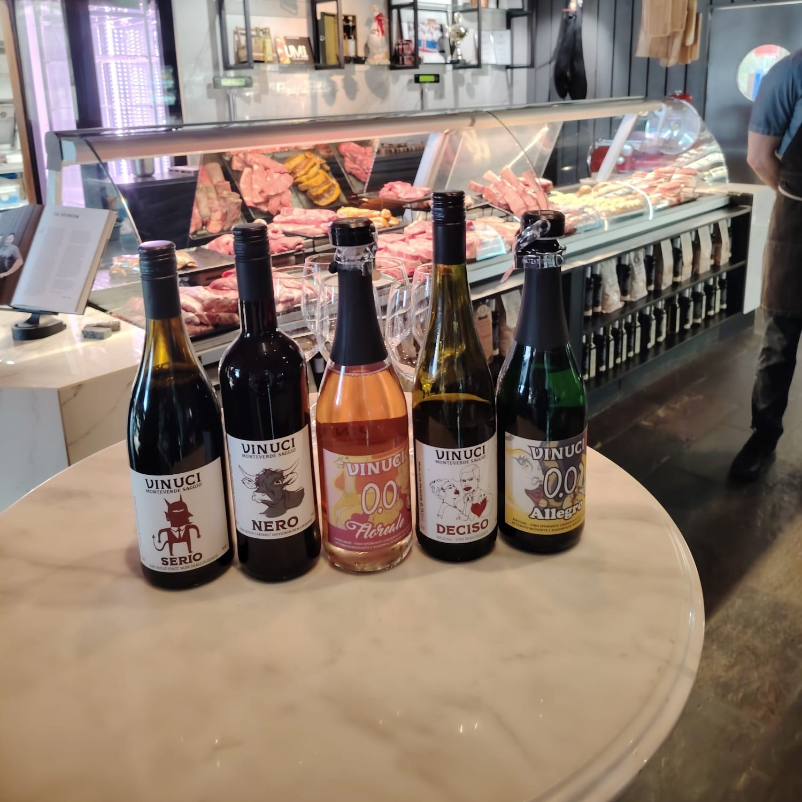
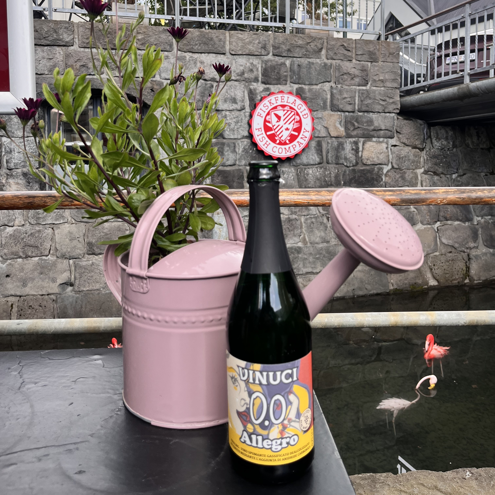
Á Merano WineFestival 2025 hlaut Vinuci þrenn verðlaun The WineHunter No | Low Award — fyrir Nero, Deciso og Allegro. Verðlaunin fagna gæðum, jafnvægi og fágun áfengislausra vína. At the 2025 Merano WineFestival, Vinuci received three The WineHunter No | Low Awards — for Nero, Deciso and Allegro. The awards celebrate the quality, balance and refinement of alcohol-free wine.
Verðlaunað fyrir dýpt og mýkt áfengislauss rauðvíns — hefðbundin fylling í léttari og fágaðri útgáfu.Awarded for the depth and softness of an alcohol-free red — traditional intensity in a lighter, more refined form.
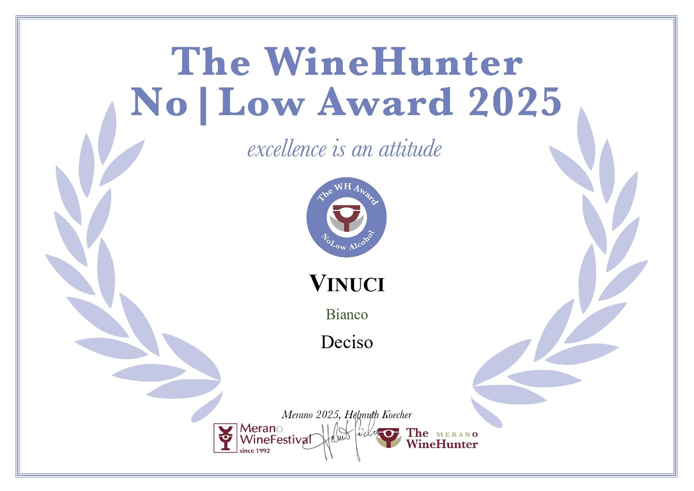
Verðlaunað fyrir persónuleika og fágun áfengislauss hvítvíns — ákveðið, samræmt og ekta í bragði.Awarded for the character and refinement of an alcohol-free white — decisive, harmonious and authentic in taste.
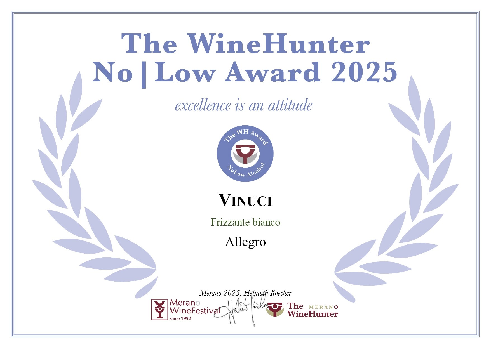
Verðlaunað fyrir ferskleika og líf áfengislauss freyðivíns — gleðin við að skála, létt og ósvikin.Awarded for the freshness and vitality of an alcohol-free sparkling — the joy of a toast, light and genuine.
Við komum með úrvalið, smökkum saman og finnum vínin sem passa á matseðilinn þinn.We bring the range, taste together, and find the wines that fit your menu.